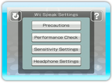

 Select in the chat room or the lobby to display the Wii Speak Settings screen.
9 |
Wii Speak Settings |
|
● Precautions ● Performance Check *Please be as quiet as possible when performing this test. If you perform the test and the Wii Speak accessory is judged to be functioning incorrectly, please check the tutorials and the Wii Speak Operations Manual to make sure everything has been set up correctly. If you perform the test and the Wii Speak accessory is judged to be functioning properly, yet you are still having difficulty chatting, please see the Q&A section. (see p. 18) *The check will not test your Internet connection. ● Sensitivity Settings If your voice is registering in the High range, you may experience echoing or high-frequency “howling.” If your voice is registering in the Low range, it may be too soft for your chat partners to hear. ● Headphone Settings *If you aren’t using headphones, please turn this setting off. If this setting is turned on when you aren’t using headphones, it may result in echoing or other audio problems. This setting will not be saved. |